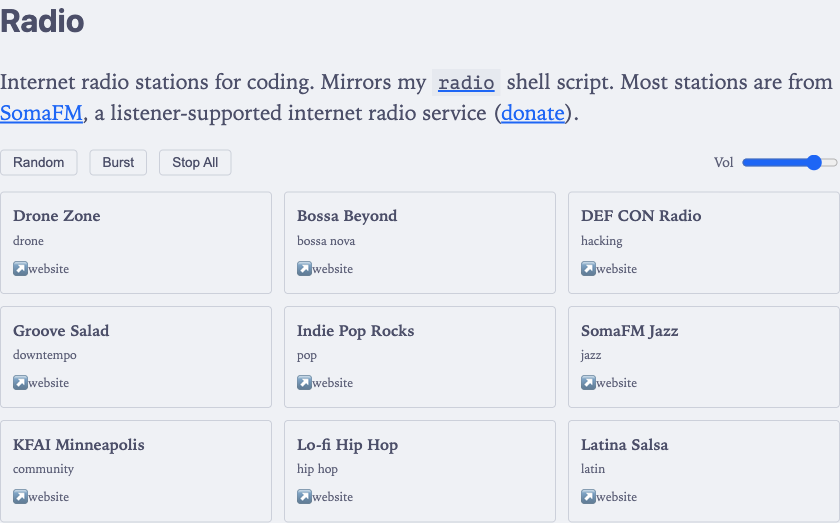

★ web radio player
• 466 words • 3 min
I have a radio shell
script in pancake (=miscellaneous unix
scripts) that streams curated (and free) internet radio stations via mpv. It
works great from the terminal, but I wanted to
go one step further and make it available from a web browser as well.
The script supports:
- playing a specific station,
- picking a random one,
- burst mode (multiple simultaneous streams), and
- listing what’s currently running
All of these map well to a web browser UI.
Fast-forward… (pun intended)
Gimme radio #
I added a /radio/ page to this blog. It’s a single Hugo
layout with inline CSS and JS, following the same pattern as the graph page1.
The core is simple (and effective!) — a (hash) Map of station IDs to Audio
objects:
const playing = new Map();
function play(id) {
if (playing.has(id)) return;
const s = getStation(id);
const audio = new Audio(s.url);
audio.volume = volume;
audio.play().catch((e) => {
console.warn('Failed to play ' + s.name + ':', e.message);
});
playing.set(id, audio);
updateUI();
}
function stop(id) {
const audio = playing.get(id);
if (!audio) return;
audio.pause();
audio.src = '';
playing.delete(id);
updateUI();
}Setting audio.src = '' after pausing is important — without it, the browser
keeps the HTTPS connection open to the stream server.
Burst mode #
The shell script has a --burst flag that launches N random stations
simultaneously. The browser version does the same (well, it’s hard-coded to 3
stations):
function playBurst() {
stopAll();
const indices = [];
while (indices.length < 3 && indices.length < stations.length) {
const idx = Math.floor(Math.random() * stations.length);
if (indices.indexOf(idx) === -1) indices.push(idx);
}
indices.forEach((i) => play(stations[i].id));
}Multiple Audio objects play concurrently with no issues. The volume slider
applies to all of them.
Stations #
Most stations are from SomaFM, a listener-supported internet radio service. They have a clear policy for third-party players: display the station name and link back. Each card links to its station homepage.
I dropped two stations from the original script:
- HBR1 Trance and a rain sounds stream from TorontoCast. HBR1 only serves over
http://, which browsers block as mixed content on HTTPS sites. - TorontoCast’s terms explicitly prohibit embedding streams in third-party players.
Implementation #
The UI is a CSS grid of clickable cards with a controls bar (Random, Burst, Stop
All, volume). Playing stations get a highlighted border and a pulsing dot
indicator that respects prefers-reduced-motion. The whole thing uses the
blog’s existing CSS variables so it works in both light and dark mode,
integrating awesomely with its catppuccin theme.
The page: /radio/.
And here’s a screenshot (light theme)2:

Why is this post tagged with ai? The radio page was vibe-coded.
Suggestions to add more web radios to that page will be welcome. ∎
-
Is this the future? Various little web apps in this site? ↩︎
-
Taken with playwright via Claude Code. How cool! ↩︎